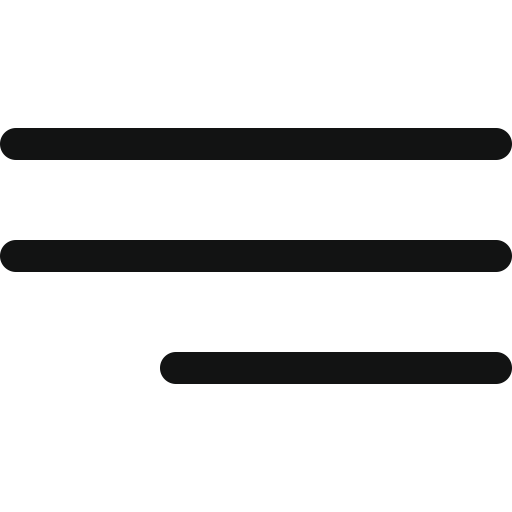

Saving water is one of the most challenging topics that Egypt suffers from. We use technology to solve that problem (saving water). We will make a robot to use in cleaning public places and houses like airports to reduce consuming water and save it because the robot works automatically and manually.
1- Design the robot
2- Construct the robot
First, we made a design for the robot using the DXF application and draw all details of the robot structure; then, we cut the body design using CNC cutting machine.
Then we started to collect the Parts of the robot together as we connected the wheels of the robot to the motors that make the wheels move and compound them to the base of the robot body; after that, we put 4 motors to increase the torque of the robot.
After that, we compound the motors of the brushes with them and put them in their position; then, we put the tank of water connected to a pump to suck water and pump it throw a snout. Then we connected the ultrasonic sensor to the servo motor; Then, we made the circuit, drawing it and its souring, besides programming the controller that will give instructions to the motors of wheels and brushes and moving Of the sensor also used a shield of 8 relies on instead of three bridges regulates the Voltage of Each part in the robot. We put a Bluetooth sheet to let us control the robot using Bluetooth with a programmed application on a Mobil phone.
•Shields are boards that can be plugged on top of the Arduino PCB extending its capabilities, and we made it to control all motors as we made 8 relays in it instead of using 3 motor devices (h-bridge) to decrease the size of the device.
•BT (Serial Bluetooth module) is widely used for wireless data communication as GPS navigation devices to control the movement of a Robot manual with an application on a mobile phone (it can use as input and output).
•Sensors to make a robot work automatically by programming it and determining where the robot should move and when it stops.
•Pump to take water from the tank and pump it to brush and do his function.
•12v recharge battery to turn on the pump, switch on brushes, and control on motors.
•Brushes to receive water from the pump and use it to clean the floor (by determining the area to clean and the quantity of water).
•Motors to push wheels and rotating brushes.
Our robot has no environmental negative, but it will make it cleaner. And about the function (that's water saving). We could save water that cleaning men use by 30%.